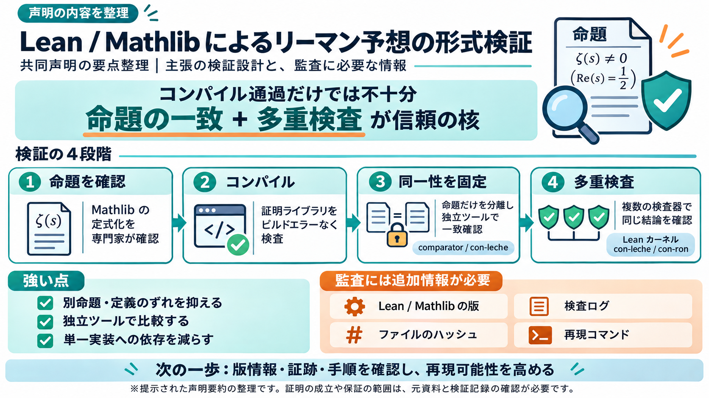

Claudeを使い「リーマン予想」を証明か Anthropic数学者が発表 Lean検証も通過、数学界が精査へ（CNET Japan） - Yahoo!ニュース
Alpöge氏によると、自ら証明の方向性を探り、終盤ではClaudeが重要な着想を示したという。同じ手法で、対象をディリクレのL関数に広げた「一般化リーマン予想」も証明できたとしている。 公開した証明は、数学的な推論が正しいかをコンピ…

Alpöge氏によると、自ら証明の方向性を探り、終盤ではClaudeが重要な着想を示したという。同じ手法で、対象をディリクレのL関数に広げた「一般化リーマン予想」も証明できたとしている。 公開した証明は、数学的な推論が正しいかをコンピ…
声明によると、証明はLeanで1700万行に及ぶ。数十人がコンパイルを再現したほか、証明した定理が、Mathlibに収録されているリーマン予想の記述と一致することも、2つの独立したツールで確かめた。複数の独立したチェッカーでも証明を検査した…
まだないのは、どちらの外部確認もです。Alpögeのファイルをビルドし、最終定理を標準の定式化と突き合わせたという公的な報告は出ていません。マスッロの草稿は公開からまだ数時間。どちらも論文としては未整備。Anthropic、スタンフォード、…
Skip to main content # Lean community blog Main site Archive Tags About RSS feed # Lean verification o…
# Anthropicの人がClaudeと数学界のラスボス「リーマン予想」の証明を発見したらしい Anthropic所属の数学者Levent Alpöge氏が自身のサイトにremark.pdfというファイルをアップしています。この文書には…